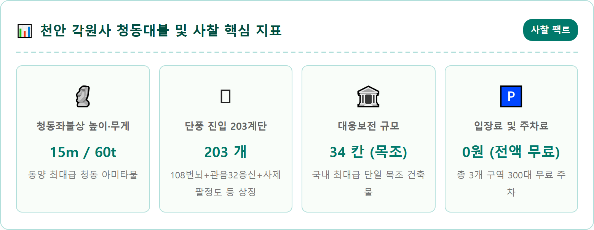
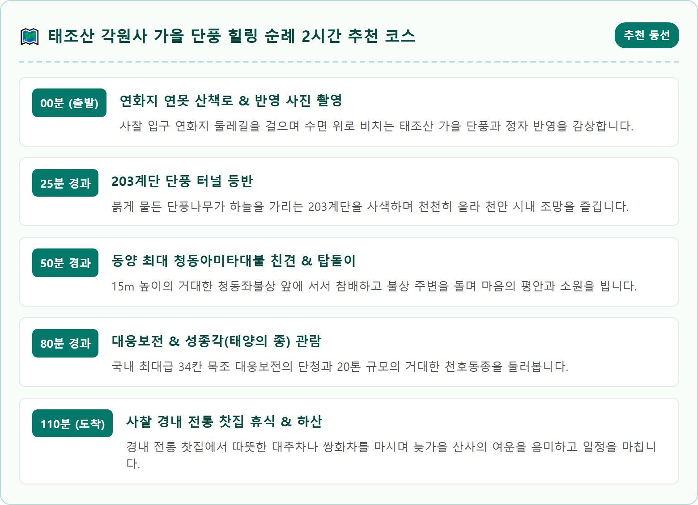
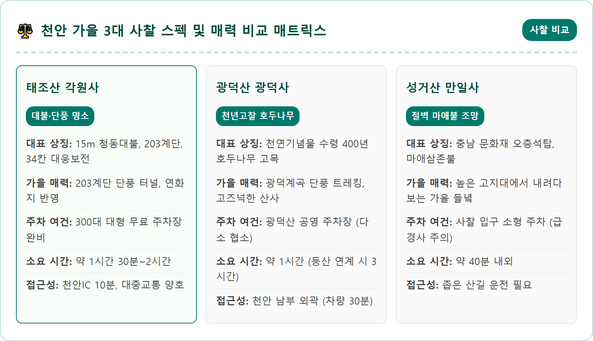
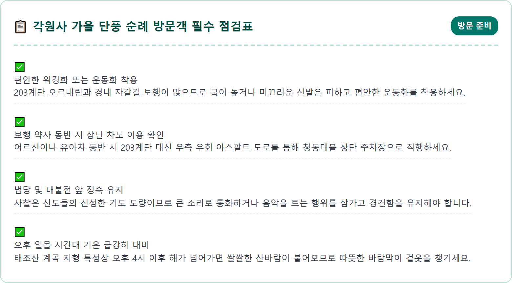
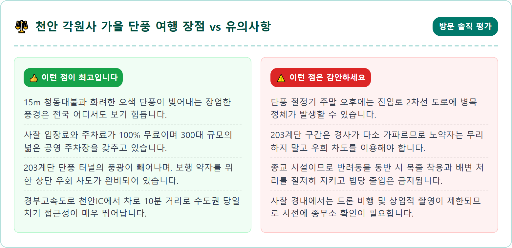
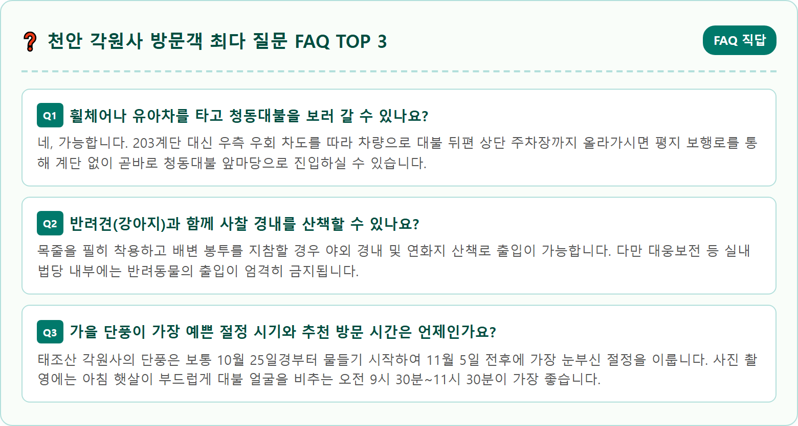

A majestic colossal bronze Buddha statue sitting serenely in meditation on an ornate lotus pedestal at Gakwonsa Temple on Taejosan Mountain in Cheonan, South Korea during peak autumn. Vibrant crimson and scarlet maple trees, warm golden ginkgo leaves, and lush evergreen pines frame the massive bronze Buddha against a clear cobalt autumn sky. Warm sunlight illuminates the gentle and compassionate bronze facial expression of the Buddha. In the background, forested slopes of Taejosan mountain covered in a tapestry of rich autumn colors. Serene, spiritual, awe-inspiring, ultra-realistic nature and cultural heritage photography, 8k resolution, crisp details, balanced exposure.

충청남도 천안시 동남구 안서동, 고려 태조 왕건이 군사를 양병했다는 유서 깊은 태조산(太祖山, 421m) 서북쪽 자락에 자리 잡은 각원사(覺願寺)는 대한민국 불교 건축의 웅장함을 대표하는 호서제일의 사찰입니다. 1977년 남북평화통일의 염원을 담아 창건된 각원사는 비교적 현대에 건립된 사찰임에도 불구하고, 백두대간의 정기가 서린 태조산의 수려한 산세와 압도적인 건축미가 어우러져 천안을 대표하는 문화 관광 명소로 우뚝 섰습니다.
봄철이면 겹벚꽃(수양벚꽃)이 온 사찰을 분홍빛으로 뒤덮어 상춘객들의 발길이 끊이지 않는 각원사는 가을이 찾아오면 완전히 다른 분위기의 장엄하고 고아한 변신을 선보입니다. 태조산 능선을 따라 번져 내려오는 울긋불긋한 가을 단풍이 청동대불과 대웅보전의 거대한 지붕선 위로 그림처럼 드리워지며 탄성을 자아냅니다. 붉은 단풍나무와 노란 은행나무, 그리고 짙푸른 소나무가 빚어내는 색채의 조화는 사찰의 고요한 공기와 어우러져 속세의 번뇌를 잊게 만듭니다.
각원사는 서울과 수도권에서 경부고속도로를 타고 1시간 남짓이면 도착할 수 있는 뛰어난 지리적 접근성을 자랑합니다. 복잡한 도심을 벗어나 맑은 산 공기를 마시며 웅장한 불교 예술과 가을 단풍의 절정을 함께 감상할 수 있어 가족 주말 나들이와 힐링 드라이브 여행지로 최고의 만족도를 선사합니다.
각원사를 찾는 탐방객들에게 가장 깊은 인상을 남기는 진입 코스는 사찰 입구 연화지 연못 앞에서 청동대불로 곧장 이어지는 '203계단'입니다. 이 계단은 단순한 돌계단이 아니라 불교의 깊은 교리를 담고 있습니다. 인간의 108가지 번뇌를 뜻하는 108계단과, 아미타불의 48서원, 관세음보살의 32응신, 4성제와 8정도 등 총 95개의 가르침을 계단 수에 반영하여 총 203개의 돌계단으로 조성되었습니다.
계단 하나하나에 발을 디딜 때마다 일상의 번뇌를 하나씩 내려놓는다는 참회의 마음을 담아 오르는 이 길은, 가을이면 계단 양옆으로 늘어선 활엽수들이 머리 위로 아치를 이루며 환상적인 붉은 단풍 터널을 만들어냅니다. 나뭇잎 사이로 부서져 내리는 따스한 가을 햇살을 받으며 계단을 오르다 보면 어느새 숨이 차오르지만, 이마에 맺힌 땀방울을 식혀주는 시원한 태조산 산바람이 가슴을 상쾌하게 씻어줍니다.
계단 중턱에 이르러 잠시 뒤를 돌아보면 천안 시내 북부와 인근 대학가 저수지 일대가 발아래로 시원하게 펼쳐지는 파노라마 전망을 마주하게 됩니다. 그리고 203번째 마지막 계단을 딛는 순간, 눈앞에 우뚝 솟아오르는 거대한 청동대불의 자비로운 미소는 벅찬 감동과 함께 깊은 마음의 평온을 안겨줍니다.

각원사의 상징인 청동아미타여래좌불상은 그 거대한 규모만으로도 보는 이를 압도합니다. 청동 60톤을 주조하여 만든 이 불상은 좌대 높이 2.8m, 불상 높이 12.2m를 합쳐 총 15m에 달하며, 귀 길이만 1.75m, 손톱 길이만 30cm에 이르는 엄청난 스케일을 자랑합니다. 불상의 둘레는 30m가 넘어 성인 20명이 손을 잡고 둘러싸야 할 정도입니다.
거대한 크기에도 불구하고 조각의 비례와 세부 표현은 극도로 섬세하고 정교합니다. 연화대좌 위에 결가부좌를 틀고 단정하게 앉아 있는 부처님의 모습은 위엄이 넘치면서도, 살포시 머금은 온화한 미소와 반개한 눈매는 마주하는 모든 이들에게 깊은 자비심과 위로를 건넵니다. 오른손을 가슴 높이로 올리고 왼손을 무릎 위에 얹은 수인(手印)은 모든 중생의 두려움을 없애주고 소원을 들어준다는 의미를 담고 있습니다.
가을철 햇살이 청동 표면에 은은하게 반사될 때, 불상 뒤편으로 펼쳐지는 태조산 능선의 붉은 단풍과 푸른 하늘이 배경막이 되어 장엄한 종교적 아우라를 완성합니다. 불상 앞 너른 광장에서 향을 피우고 삼배를 올린 뒤 불상 주위를 세 바퀴 도는 탑돌이(탑돌이 형태의 대불 순례)를 행하는 신도들과 여행자들의 발걸음에서 진지한 평온함을 엿볼 수 있습니다.
대불전을 둘러본 후 완만한 숲길을 따라 경내 중심부로 내려오면 각원사의 본당인 '대웅보전(大雄寶殿)'이 웅장한 자태를 드러냅니다. 각원사 대웅보전은 정면 7칸, 측면 4칸, 총 34칸 규모의 거대한 팔작지붕 다포계 목조 건축물로, 통도사 대웅전이나 화엄사 각황전 등 전통 고찰의 본당을 능가하는 국내 최대 규모급의 단일 목조건물입니다.
못을 거의 사용하지 않고 전통 결구 방식으로 짜 맞춘 거대한 대들보와 기둥들은 백두산과 태백산 등지에서 공수한 거대한 육송을 사용하여 지어졌습니다. 법당 처마 밑을 화려하게 수놓은 오색 단청은 가을 단풍의 색감과 절묘한 조화를 이루며 한국 전통 목조 건축의 정수를 보여줍니다. 법당 내부에는 석가모니불을 주존으로 좌우에 관세음보살과 대세지보살을 모신 삼존불이 장엄하게 봉안되어 있습니다.
대웅보전 맞은편 성종각(聖鐘閣)에 걸린 '태양의 종(천호동종)' 역시 빼놓을 수 없는 볼거리입니다. 무게 20톤에 달하는 거대한 범종으로, 에밀레종(성덕대왕신종)에 버금가는 웅장한 규모를 자랑합니다. 조석 예불 시간에 맞춰 태조산 계곡으로 울려 퍼지는 맑고 깊은 종소리는 수 킬로미터 밖까지 메아리치며 듣는 이의 영혼을 울리는 맑은 울림을 전해줍니다.

각원사 경내로 올라서기 전, 사찰의 첫 관문인 '연화지(蓮花池)'는 수변 단풍의 서정적인 아름다움을 만끽할 수 있는 최고의 포토존입니다. 부처님의 청정한 지혜를 상징하는 연꽃 연못인 연화지는 둘레 약 400m의 아담한 수변 생태 공간으로 조성되어 있습니다. 여름철 연꽃이 만개했던 자리에 가을이 찾아오면, 연못 주변에 늘어선 수양버들과 벚나무, 단풍나무들이 저마다 고운 옷으로 갈아입고 수면 위로 그림자를 드리웁니다.
바람이 잔잔하게 잦아드는 오전 시간대나 해질녘에 연화지를 찾으면, 거울처럼 맑은 수면 위로 파란 가을 하늘과 오색 단풍, 그리고 연못 한가운데 자리 잡은 전통 정자의 모습이 대칭을 이루며 환상적인 반영을 연출합니다. 연못 둘레를 따라 조성된 평탄한 흙길 산책로를 천천히 걸으며 물그림자를 감상하는 시간은 각원사 순례의 훌륭한 워밍업이 되어줍니다.
연못가 벤치에 앉아 수면 위로 유유히 헤엄치는 잉어 떼를 바라보며 마시는 따뜻한 차 한 잔은 일상에 지친 마음에 깊은 여유를 선사합니다. 203계단을 오르기 전이나 참배를 마치고 내려오는 길에 반드시 연화지 둘레길을 한 바퀴 돌아보는 여유를 가져보시길 권합니다.
각원사를 방문하는 자가용 운전자들에게 가장 반가운 소식은 사찰 입장료와 주차료가 전액 무료라는 점입니다. 각원사는 방문객의 편의를 위해 크게 3개 구역의 주차 공간을 운영하고 있습니다. 첫 번째는 사찰 진입로 입구 연화지 주변에 위치한 '제1주차장'으로, 203계단을 직접 걸어 올라가며 단풍 터널을 통과하고자 하는 건강한 탐방객들에게 가장 적합한 출발점입니다.
두 번째는 대웅보전 바로 아래쪽에 위치한 '제2주차장'이며, 세 번째는 청동대불 바로 뒤편 턱밑까지 연결되는 '대불 상단 주차장'입니다. 특히 무릎 관절이 약한 어르신이나 영유아 유아차를 동반한 가족이라면 203계단을 오르는 것이 큰 부담이 될 수 있습니다. 이때는 연화지 삼거리에서 계단 쪽으로 꺾지 말고, 우측의 아스팔트 포장도로(사찰 순환 차도)를 따라 천천히 차량을 몰고 약 500m가량 올라가면 청동대불 바로 옆 평지에 위치한 상단 주차장으로 곧장 진입할 수 있습니다.
상단 주차장에 차를 대면 가파른 계단을 단 하나도 오르지 않고 완만한 평지 보행로를 통해 1~2분 만에 청동대불 앞마당에 닿을 수 있습니다. 단풍 피크 시즌 주말에는 상단 주차장이 일찍 만차될 수 있으므로, 오전 10시 이전 일찍 도착하거나 연화지 제1주차장에 여유 있게 차를 대는 것이 좋습니다.

각원사 경내 관람만으로 아쉬움이 남는다면 사찰 뒤편으로 연결되는 '태조산 등산로'와 '솔바람길'을 연계한 가을 트레킹을 적극 추천합니다. 각원사 청동대불 좌측 능선길을 따라 오르면 태조산 주 능선 등산로와 자연스럽게 연결됩니다. 태조산은 해발 421m로 산세가 험하지 않고 완만하여 등산 초보자도 1시간 남짓이면 정상에 오를 수 있는 친근한 명산입니다.
각원사에서 출발해 태조산 정상을 거쳐 유량동 구름다리 방면으로 내려오거나 원점 회귀하는 코스는 총거리 약 4.5km로 2시간~2시간 30분 정도가 소요됩니다. 울창한 참나무 숲과 소나무 숲이 이어지는 능선길을 걷는 동안 발밑으로 바스락거리는 마른 낙엽 소리가 청명한 가을 산행의 정취를 더해줍니다.
태조산 정상 전망대에 서면 동쪽으로는 흑성산과 독립기념관의 웅장한 전경이 한눈에 들어오고, 서쪽으로는 천안 시가지와 아산 방면의 너른 평야가 시원하게 펼쳐집니다. 늦가을 서늘한 바람을 맞으며 능선 단풍을 걷고 사찰로 내려와 경내 약수로 목을 축이는 등산 코스는 몸과 마음을 건강하게 깨우는 활력소가 됩니다.

각원사에서 마음을 씻어내는 힐링 단풍 산책을 마쳤다면, 천안의 풍성한 미식을 즐길 차례입니다. 각원사에서 차량으로 10분 거리인 천안 시내와 인터체인지 주변에는 천안의 영원한 상징인 '원조 천안 호두과자' 전문점들이 즐비합니다. 갓 구워내 겉은 바삭하고 속은 부드러운 팥앙금과 큼직한 호두 알맹이가 씹히는 따끈한 호두과자는 가을 드라이브의 가장 달콤한 간식거리입니다.
점심이나 저녁 식사 코스로는 차량으로 약 25분 거리에 위치한 '병천 순대거리'를 강력히 추천합니다. 3·1 만세운동의 현장인 아우내장터에 형성된 병천 순대거리는 담백하고 쫄깃한 소창에 신선한 선지와 양배추, 파, 당면 등 갖은 야채를 듬뿍 넣어 끓여내는 전통 순대국밥의 본향입니다. 잡내 없이 뽀얗고 깊은 사골 국물에 들깨가루와 새우젓을 곁들여 먹는 순대국밥 한 그릇은 쌀쌀한 가을 날씨에 얼어붙은 몸을 훈훈하게 덥혀줍니다.
식사 후에는 인근의 독립기념관 단풍나무 숲길을 함께 둘러보거나, 유량동의 감성 베이커리 카페거리에서 깊어가는 가을 저녁의 여유를 즐길 수 있습니다. 웅장한 사찰 문화유산과 정겨운 지역 미식이 어우러진 천안 당일치기 여행은 남녀노소 누구에게나 완벽한 가을 나들이를 선사할 것입니다.

천안 태조산 각원사는 거대한 청동대불이 전하는 압도적인 위엄과, 천안을 굽어살피는 자비로운 미소가 공존하는 특별한 영적 쉼터입니다. 203계단을 하나하나 딛고 올라 단풍 터널을 통과할 때마다 마음에 낀 일상의 찌꺼기들이 맑은 가을바람에 씻겨 내려가는 치유의 카타르시스를 경험하게 됩니다.
사찰을 찾는 모든 이들이 평온한 시간을 누릴 수 있도록 경내에서는 기본적인 불교 참배 에티켓을 지켜주시기 바랍니다. 고즈넉한 산사의 침묵을 존중하며 조용한 발걸음으로 경내를 거닐고, 아름다운 단풍을 눈과 가슴으로 온전히 감상하는 배려가 필요합니다.
하늘은 높고 단풍은 붉게 타오르는 눈부신 가을날, 복잡한 일상을 잠시 내려놓고 천안 태조산 각원사를 찾아보시길 권합니다. 거대한 부처님의 미소 아래서 가을 단풍의 깊은 정취를 만끽하며 지친 마음에 따뜻한 평안과 새로운 활력을 가득 채워가시길 바랍니다.